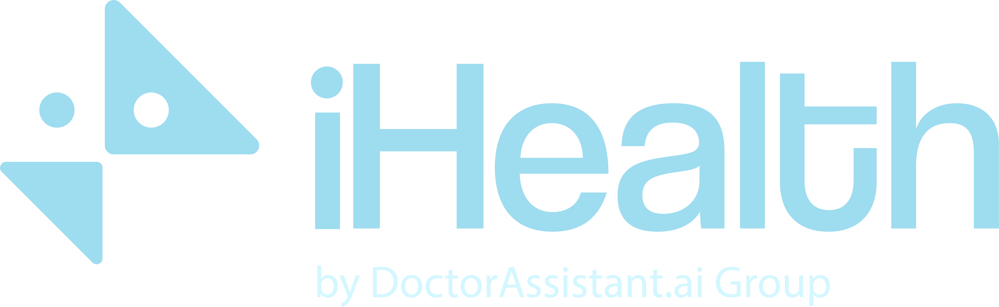

Brazil has the patients.
We make them provable.
Sponsors can't place a trial in patients they can't see. TrialBridge lets Brazilian sites prove their real capacity — privately — and lets sponsors run protocol feasibility against it at national scale.
We asked 73 of them. The barrier is visibility.
Primary research with biotech, pharma & CRO decision-makers — the people who actually pick the country. Brazil runs under 2% of the world's trials despite deep patient pools and ~65% lower oncology cost. It's almost never the science.
Just from learning about the 2024 reform — with zero detractors among the most operational personas.
Lei 14.874 already removed their #1 barrier. Almost nobody knows it yet.
"Investigators with patients" is their top ask — and 70% lock the country list at feasibility.
Seven reasons Brazil gets cut — and what we do about each
Straight from the survey. Some are outdated perceptions the 2024 reform already fixed — the rest we cover, built into the product or handled by our specialist partners.
Site selection
Which sites can actually deliver the patients? Today it's a feasibility guess — and 70% of CROs lock the country list at exactly this stage.
→ Match your protocol against real, site-proven capacity, before the list locks.
Regulatory approval
Approval timelines are the #1 barrier and #1 dealbreaker (41% / 25%). The 2024 law collapsed the double ethics review and capped ANVISA at 90 days — yet 71% never heard.
→ We surface the reform and the current, provable timeline at feasibility.
Start-up time
Contract-to-first-patient historically ran ~12 months. The new framework targets ~2–3. Perception still says "too slow."
→ We put the current reality in front of the people choosing the country.
Investigators
"Pre-identified investigators with patients" is the #1 operational ask — 50% of CROs. Nobody can see them before committing.
→ Sites prove which investigators have eligible patients — privately, counts not rows.
Sites & quality
Site quality & consistency is the #2 barrier — 60% among CROs. Proven capacity isn't the same as proven quality.
→ We prove patient capacity and back it with a vetted, quality-certified site network (GCP / inspection history).
Regulatory specialists
Local regulatory / feasibility experts are the #1 requested enabler (47%). Sponsors want humans on call, not just software.
→ We already have specialized local regulatory & feasibility partners — on call, not on a roadmap.
Customs — importation & clearance
Getting drug, supplies and equipment through customs is a top barrier (32%) — and the one US sponsors flag most.
→ Specialized import & customs partners handle it — flagged directly in your feasibility view.
Patients, made provable
Brazil is seen as "same, worse, or unknown" vs. its alternatives — and often loses to keeping the trial domestic. The patient pool is real; it just isn't visible.
→ A national DataSUS estimate + honest "≈N enrollable over 6 months" makes it undeniable.
Specialists already in our network
The regulatory, feasibility, site-quality and customs expertise behind the "in our network" claims above.

Life Sciences
Connective tissue, not another database
Sites prove their own capacity; sponsors match against what's real — and honest.
Post the protocol
Upload eligibility criteria; Claude parses them into a typed, human-verified schema.
Sites prove capacity
Each site matches against its own patients privately — de-identified counts and the bottleneck leave, patient rows never do.
Honest feasibility
A national DataSUS estimate plus "≈N enrollable over 6 months" — not an inflated upper-bound screening count.
See what one criterion is really costing you
Every eligibility criterion narrows the pool. TrialBridge shows, live, how loosening a single criterion expands the eligible patients across responding sites — before a protocol amendment, not after enrollment stalls.
- Toggle any criterion to see its exact impact across the network.
- Honestly separates newly eligible patients from "unknown-data" effects.
- Modeled on real Phase III structure (HER2+ metastatic breast cancer), simplified for illustration.
Protocol softening simulator
IllustrativeUncheck a softenable criterion to see the patient pool grow. Numbers are illustrative.
Whichever side of the trial you're on
Find sites that can actually enroll
"Our incumbent database is biased toward markets we've already saturated. I need to see capacity that actually exists."
- Run feasibility against real, site-proven capacity — at national scale.
- See exactly how softening a criterion expands your pool.
- Compare sites on a standardized scorecard, not a sales call.
Get found by sponsors who are looking
"We had the patients and the equipment. What we lacked was a way to show up in a sponsor's feasibility study."
- Prove capacity once — privately, counts-not-rows.
- Surface automatically in matching feasibility scorecards.
- Build a track record that compounds with every trial.
One scorecard per site, side by side
| Site | Enrollment capacity | Equipment fit | Certifications | Past performance |
|---|---|---|---|---|
| Hospital das Clínicas — São Paulo | 92% | Full match | GCP, ANVISA | On-time: 92% |
| Instituto Oncológico — Curitiba | 78% | Partial — PET/CT offsite | GCP, ANVISA | On-time: 87% |
| Centro de Pesquisa — Porto Alegre | 65% | Full match | GCP | On-time: 74% |
Frequently asked questions
Is TrialBridge another site database like TriNetX or IQVIA?
How does a site's capacity stay private?
Where does the national estimate come from?
Why now?
Brazil has the patients. See them made provable.
Whether you run a site or run clinical operations, TrialBridge shows you what's actually there — at the feasibility stage, where the decision is made.